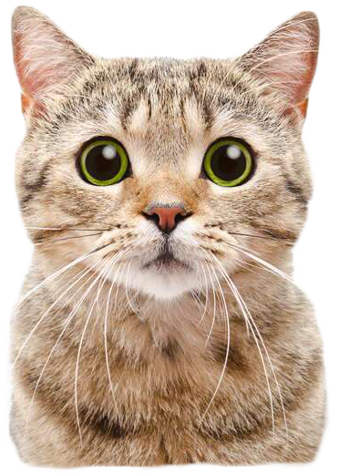

Discover more about
“Why are cats gods?”
Because, despite us humans thinking of them as pets …Despite their tiny size …Despite their need to be fed and watered …Despite the fact that they can be caged quite easily …Cats know, they know deep inside, instinctually and without any other possibility entering their minds …They know that they are here to be worshipped and, if you don’t worship them, then you are so, so wrong.
I once had a little black kitten. It was outside one day and a man with two, huge Scottish terriers straining at their leashes walked toward us. Did that little, tiny kitten run away? Cower? Did it even bother to look afraid? Nope. It raised it’s hackles, stood its ground and hissed - and they turned.
I fell in love with cats that day. Imagine the nerve! That, and their ability to hit the top of the bookcase from a sitting position.
Cats are gods.
© Anusha Hazarika, NITS